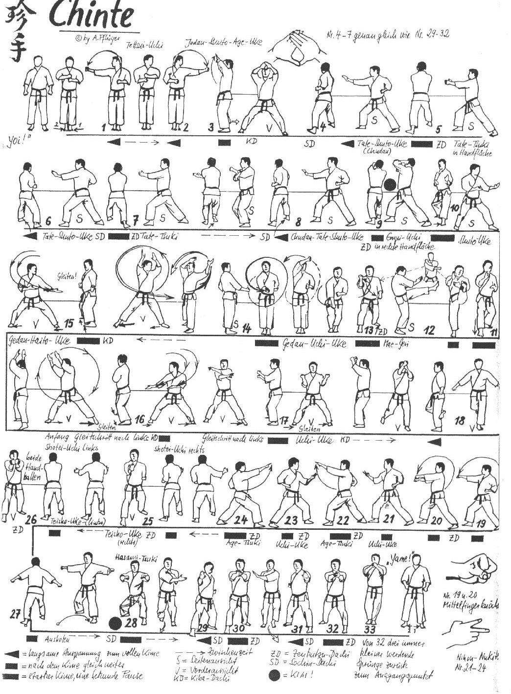

Chinte

- Yoi andando in Eisoku Dachi braccia all’altezza del plesso solare, i pugno sinistro orizzontale con le dita rivolte verso l’alto e il pugno destro verticale con il dorso in avanti.
- Lentamente eseguo Tettsui Uchi destro e proseguo il movimento portandolo al di sotto del pugno sinistro che riprende a sua volta il movimento verso sinistra.
- Quando il pugno sinistro si ricongiunge sotto il destro, avanzo con la gamba sinistra in Kiba Dachi e ruotando il corpo quindi di 90°, contemporaneamente porto entrambe le braccia distese ad altezza Jodan di fronte al viso e unendo solo indice e pollice destro sui corrispondenti sinistri.
- Sposto la gamba destra di 90° in senso orario ed eseguo Migi Chudan Tate Shuto.
- Chiudendo l’anca eseguo Gyaku Tzuki sinistro colpendo il palmo destro.
- Avanzo un passo ed eseguo Hidari Chudan Tate Shuto.
- Chiudendo l’anca eseguo Gyaku Tzuki destro colpendo il palmo sinistro.
- Avanzo un passo ed eseguo Migi Chudan Tate Shuto.
- Chiudendo l’anca eseguo Gyaku Age Empi Uchi sinistro colpendo il palmo destro. Kiai.
- Mawatte in Hidari Kokutzu Dachi Shuto.
- Avanzo in Migi Kokutzu Dachi Shuto.
- Eseguo Hidari Mae Geri e mentre richiamo la gamba indietro eseguo contemporaneamente Uchi Uke destro Gedan Barai sinistro.
- Mentre richiamo la gamba destra vicino alla sinistra in Eisoku Dachi eseguo Ude Uke destro che prosegue la circonferenza e ruotando il pugno in modo che termini di fronte a noi con le dita rivolte verso l’alto.
- Arretro la gamba destra in Kiba Dachi eseguendo con le braccia una circonferenza in senso orario e terminando in Hidari Gedan Haito Uke e Migi Gedan Shuto Uke.
- Spostamento verso sinistra in Tsuri Ashi mantenendo il Kiba Dachi eseguendo la tecnica di braccia precedente in maniera speculare (in senso antiorario).
- Spostamento verso sinistra in Tsuri Ashi mantenendo il Kiba Dachi eseguendo doppio Uchi Uke Chudan.
- Richiamo la gamba destra in Tsuru Dachi ed eseguo doppio Yoko Gedan Barai.
- Scendo in Migi Zenkutsu Dachi ed eseguo Migi Otoshi Ippon Ken con il dito medio seguito da Hidari Otoshi Ippon Ken che va a colpire (leggermente) il dorso della mano destra.
- Richiamando al fianco il pugno sinistro eseguo Chudan Migi Nihon Nukite Uke.
- Avanzo ed eseguo Hidari Nihon Nukite ad altezza degli occhi.
- Mawatte ed eseguo Chudan Hidari Nihon Nukite Uke.
- Avanzo ed eseguo Migi Nihon Nukite ad altezza degli occhi.
- Sposto il piede destro in senso antiorario di 90° e andando in Migi Kokutsu Dachi eseguo Mawashi Teisho Uchi destro e immediatamente dopo Mawashi Teisho Uchi sinistro andando ad unire i polsi.
- Mantenendo la posizione sposto in avanti il busto inclinandolo a 45° ed eseguo Ushiro Ren Mawashi Tzuki.
- Mawatte in Hidari Kokutsu Dachi richiamo durante la rotazione i pugni ed eseguo Ren Mawashi Tzuki. Kiai.
- Avanzo un passo ed eseguo Hidari Chudan Tate Shuto.
- Chiudendo l’anca eseguo Gyaku Tzuki destro colpendo il palmo sinistro.
- Avanzo un passo ed eseguo Migi Chudan Tate Shuto.
- Chiudendo l’anca eseguo Gyaku Tzuki sinistro colpendo il palmo destro.
- Senza staccare le mani, arretro con la gamba destra in Eisoku Dachi portandole all’altezza del mento ed eseguo un saltello arretrando leggermente in diagonale verso la mia destra.
- Eseguo ancora due saltelli arretrando per rispettare l’Embusen.
- Yame!